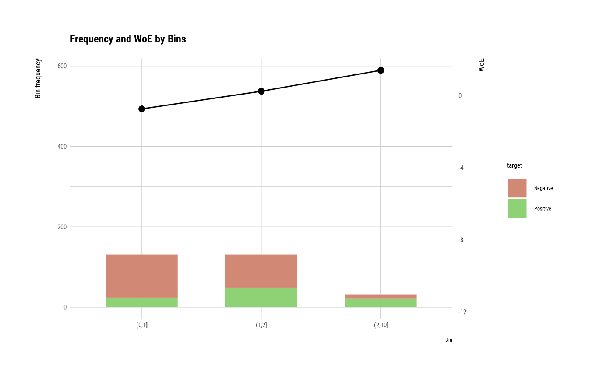

It generates plots for understand frequency, WoE by bins using performance_bin.
# S3 method for performance_bin plot(x, typographic = TRUE)
Arguments
| x | an object of class "performance_bin", usually, a result of a call to performance_bin(). |
|---|---|
| typographic | logical. Whether to apply focuses on typographic elements to ggplot2 visualization. The default is TRUE. if TRUE provides a base theme that focuses on typographic elements using hrbrthemes package. |
See also
Examples
# Generate data for the example carseats <- ISLR::Carseats set.seed(123) carseats[sample(seq(NROW(carseats)), 20), "Advertising"] <- NA # Change the target variable to 0(negative) and 1(positive). carseats$US_2 <- ifelse(carseats$US %in% "Yes", 1, 0) # Binnig from Advertising to Advertising_bin. breaks <- c(-1, 0, 6, 29) carseats$Advertising_bin <- cut(carseats$Advertising, breaks) # Diagnose performance binned variable. perf <- performance_bin(carseats$US_2, carseats$Advertising_bin) perf#> Bin CntRec CntPos CntNeg CntCumPos CntCumNeg RatePos RateNeg RateCumPos #> 1 (-1,0] 137 19 118 19 118 0.07364 0.83099 0.07364 #> 2 (0,6] 66 52 14 71 132 0.20155 0.09859 0.27519 #> 3 (6,29] 177 175 2 246 134 0.67829 0.01408 0.95349 #> 4 <NA> 20 12 8 258 142 0.04651 0.05634 1.00000 #> 5 Total 400 258 142 NA NA 1.00000 1.00000 NA #> RateCumNeg Odds LnOdds WoE IV JSD AUC #> 1 0.83099 0.16102 -1.82625 -2.42338 1.83533 0.18588 0.03060 #> 2 0.92958 3.71429 1.31219 0.71505 0.07362 0.00901 0.01720 #> 3 0.94366 87.50000 4.47164 3.87451 2.57349 0.20556 0.00865 #> 4 1.00000 1.50000 0.40547 -0.19167 0.00188 0.00024 0.05503 #> 5 NA 1.81690 0.59713 NA 4.48432 0.40069 0.11148summary(perf)#> ── Binning Table ──────────────────────── Several Metrics ── #> Bin CntRec CntPos CntNeg RatePos RateNeg Odds WoE IV JSD #> 1 (-1,0] 137 19 118 0.07364 0.83099 0.16102 -2.42338 1.83533 0.18588 #> 2 (0,6] 66 52 14 0.20155 0.09859 3.71429 0.71505 0.07362 0.00901 #> 3 (6,29] 177 175 2 0.67829 0.01408 87.50000 3.87451 2.57349 0.20556 #> 4 <NA> 20 12 8 0.04651 0.05634 1.50000 -0.19167 0.00188 0.00024 #> 5 Total 400 258 142 1.00000 1.00000 1.81690 NA 4.48432 0.40069 #> AUC #> 1 0.03060 #> 2 0.01720 #> 3 0.00865 #> 4 0.05503 #> 5 0.11148 #> #> ── General Metrics ───────────────────────────────────────── #> ● Gini index : -0.77705 #> ● IV (Jeffrey) : 4.48432 #> ● JS (Jensen-Shannon) Divergence : 0.40069 #> ● Kolmogorov-Smirnov Statistics : 0.75734 #> ● HHI (Herfindahl-Hirschman Index) : 0.34284 #> ● HHI (normalized) : 0.12378 #> ● Cramer's V : 0.81326 #> #> ── Significance Tests ──────────────────── Chisquare Test ── #> Bin A Bin B statistics p_value #> 1 (-1,0] (0,6] 82.54209 1.034438e-19 #> 2 (0,6] (6,29] 31.52095 1.973004e-08 #>plot(perf)# Diagnose performance binned variable without NA perf <- performance_bin(carseats$US_2, carseats$Advertising_bin, na.rm = TRUE) perf#> Bin CntRec CntPos CntNeg CntCumPos CntCumNeg RatePos RateNeg RateCumPos #> 1 (-1,0] 137 19 118 19 118 0.07724 0.88060 0.07724 #> 2 (0,6] 66 52 14 71 132 0.21138 0.10448 0.28862 #> 3 (6,29] 177 175 2 246 134 0.71138 0.01493 1.00000 #> 4 Total 380 246 134 NA NA 1.00000 1.00000 NA #> RateCumNeg Odds LnOdds WoE IV JSD AUC #> 1 0.88060 0.16102 -1.82625 -2.43374 1.95517 0.19771 0.03401 #> 2 0.98507 3.71429 1.31219 0.70469 0.07534 0.00923 0.01911 #> 3 1.00000 87.50000 4.47164 3.86415 2.69121 0.21534 0.00962 #> 4 NA 1.83582 0.60749 NA 4.72172 0.42228 0.06274summary(perf)#> ── Binning Table ──────────────────────── Several Metrics ── #> Bin CntRec CntPos CntNeg RatePos RateNeg Odds WoE IV JSD #> 1 (-1,0] 137 19 118 0.07724 0.88060 0.16102 -2.43374 1.95517 0.19771 #> 2 (0,6] 66 52 14 0.21138 0.10448 3.71429 0.70469 0.07534 0.00923 #> 3 (6,29] 177 175 2 0.71138 0.01493 87.50000 3.86415 2.69121 0.21534 #> 4 Total 380 246 134 1.00000 1.00000 1.83582 NA 4.72172 0.42228 #> AUC #> 1 0.03401 #> 2 0.01911 #> 3 0.00962 #> 4 0.06274 #> #> ── General Metrics ───────────────────────────────────────── #> ● Gini index : -0.87453 #> ● IV (Jeffrey) : 4.72172 #> ● JS (Jensen-Shannon) Divergence : 0.42228 #> ● Kolmogorov-Smirnov Statistics : 0.80336 #> ● HHI (Herfindahl-Hirschman Index) : 0.37711 #> ● HHI (normalized) : 0.06566 #> ● Cramer's V : 0.81326 #> #> ── Significance Tests ──────────────────── Chisquare Test ── #> Bin A Bin B statistics p_value #> 1 (-1,0] (0,6] 82.54209 1.034438e-19 #> 2 (0,6] (6,29] 31.52095 1.973004e-08 #>plot(perf)